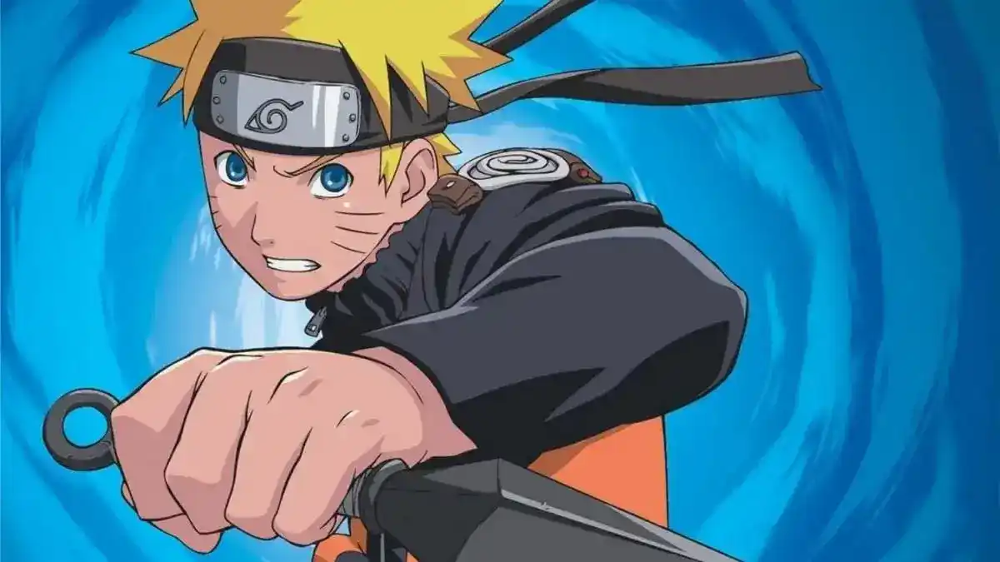

SINOPSIS
Naruto:
En un mundo de ninjas y poderes sobrenaturales, un joven huérfano llamado Naruto Uzumaki es menospreciado por su aldea debido a que es el recipiente del temible Zorro de Nueve Colas. Determinado a ser reconocido como un ninja respetable, Naruto se embarca en un arduo viaje para convertirse en el Hokage, el líder de su aldea, y ganarse el respeto y la amistad de sus compañeros. A lo largo de su entrenamiento, Naruto enfrenta desafíos y adversidades, entabla amistades duraderas y descubre la importancia de la lealtad y el trabajo en equipo mientras lucha contra enemigos poderosos y enfrenta su pasado.
Naruto Shippuden:
Tras un período de intensa formación con el sabio Jiraiya, Naruto regresa a su aldea convertido en un ninja más poderoso y maduro. Con el tiempo, descubre que Sasuke Uchiha, su amigo de la infancia, ha desertado y se ha unido a una organización criminal llamada Akatsuki. Determinado a traer a Sasuke de vuelta y evitar que sus acciones destruyan la aldea, Naruto emprende una misión para reunirse con su amigo y salvarlo del oscuro camino que ha tomado. A medida que la historia avanza, Naruto y sus amigos se enfrentan a enemigos formidables, revelan secretos sobre su pasado y luchan por proteger el mundo ninja de una inminente amenaza que podría desencadenar una devastadora guerra. En este viaje, Naruto descubre el verdadero significado de la amistad, la voluntad y la redención.
MANGA
"Naruto" es un manga escrito e ilustrado por Masashi Kishimoto, que fue serializado en la revista Weekly Shonen Jump de Shueisha desde el 21 de septiembre de 1999 hasta el 10 de noviembre de 2014. La obra consta de un total de 700 capítulos recopilados en 72 volúmenes.
Fecha de estreno: 21 de septiembre de 1999
Fecha de finalización: 10 de noviembre de 2014
La historia sigue la vida de Naruto Uzumaki, un joven ninja con el sueño de convertirse en el Hokage, el líder más fuerte y respetado de su aldea, la Aldea Oculta de la Hoja. Durante su viaje, Naruto enfrenta diversos desafíos, aprende valiosas lecciones sobre la amistad, el valor y la superación personal. También se encuentra con un elenco variado de personajes, muchos de los cuales se convierten en amigos cercanos y aliados en su búsqueda por proteger a su aldea y alcanzar sus metas.
"Naruto" se hizo extremadamente popular en Japón y a nivel internacional, y su éxito llevó a la creación de una adaptación al anime titulada "Naruto", que cubre gran parte del manga original, y su secuela "Naruto Shippuden", que sigue la trama después de un salto temporal en el manga. Además, la franquicia ha dado lugar a películas, OVAs, novelas y varios videojuegos.
La serie destaca por su emocionante acción, complejos personajes y mensajes temáticos sobre la perseverancia, la amistad, el sacrificio y la importancia de encontrar y seguir tus propios caminos. Hasta su finalización, "Naruto" fue una de las series de manga y anime más influyentes y queridas en todo el mundo.
ANIME
El anime "Naruto" es una adaptación del manga del mismo nombre creado por Masashi Kishimoto. Fue producido por el estudio Pierrot y se emitió en Japón desde el 3 de octubre de 2002 hasta el 8 de febrero de 2007. El anime cubre gran parte de la primera parte del manga, desde el comienzo hasta el arco de la "Búsqueda de Sasuke".
Información sobre el anime "Naruto":
Fecha de estreno: 3 de octubre de 2002.
Fecha de finalización: 8 de febrero de 2007.
Número de episodios: "Naruto" cuenta con un total de 220 episodios en su primera parte.
El anime sigue la vida de Naruto Uzumaki desde su infancia hasta su adolescencia, narrando su crecimiento como ninja, sus amistades y desafíos mientras se esfuerza por convertirse en el Hokage, el líder de su aldea. Durante la trama, Naruto se enfrenta a diversos enemigos y se reúne con Sasuke Uchiha, su amigo de la infancia, quien se ha ido de la aldea para buscar más poder.
Además del anime principal, existen varias películas y OVAs basadas en "Naruto". La popularidad del anime llevó a la creación de su secuela, "Naruto Shippuden", que retoma la historia después de un salto temporal en el manga y abarca la segunda parte del mismo.
Dato curioso sobre "Naruto Uzumaki"
"Dentro del mundo de Naruto Uzumaki, existe una tradición entre los habitantes de Konoha de celebrar el 'Día de Naruto', que cae el 10 de octubre. Esta fecha conmemora el nacimiento de Naruto en la serie y se ha convertido en una festividad popular entre los fans de la serie, donde suelen hacerse maratones de episodios, cosplays y compartir el amor por este carismático ninja naranja. ¡Es una forma divertida de honrar al protagonista de la serie!"